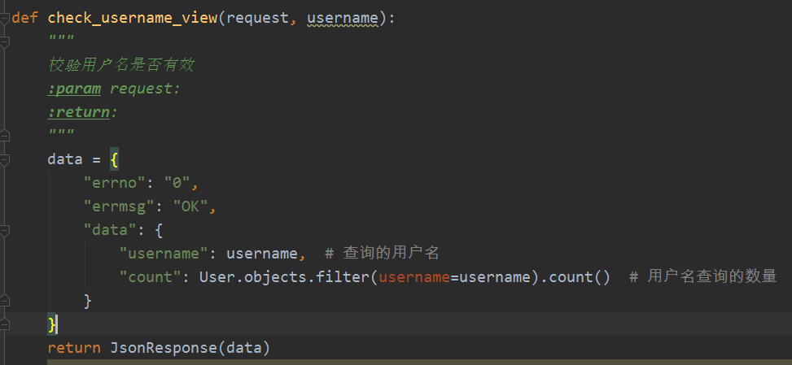
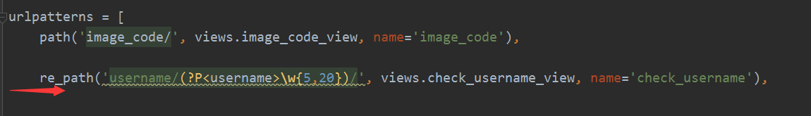
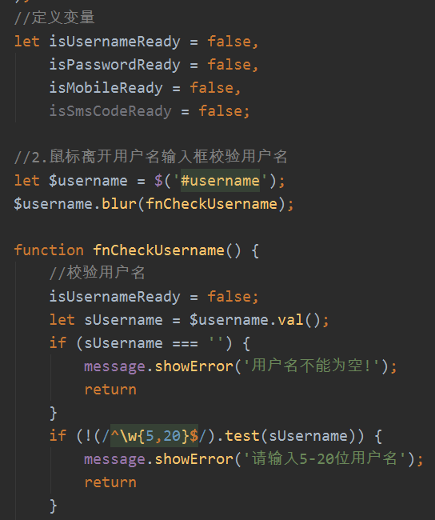
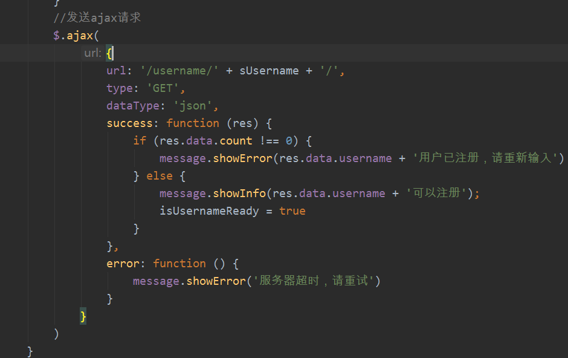
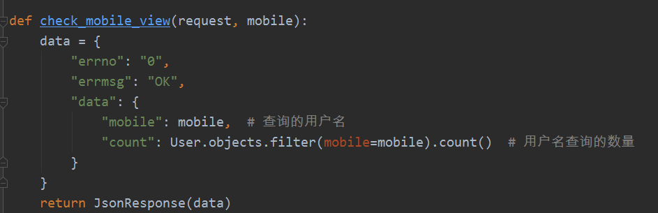
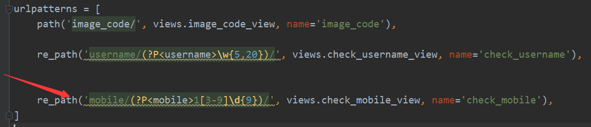
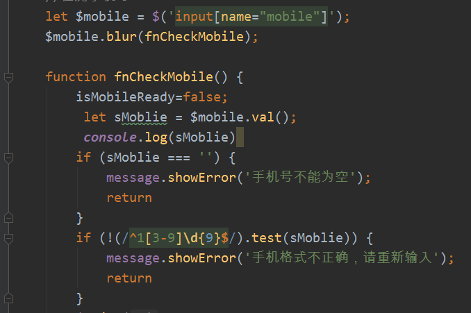
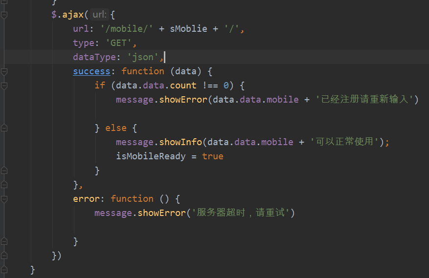
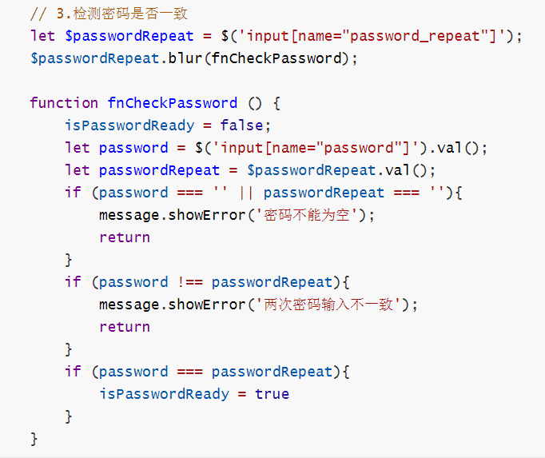

| 类目 | 说明 |
| 请求方式 | get |
| url定义 | /username/(?P<username>\w{5,20}) |
| 参数格式 | url路径参数 |
| 参数名 | 类型 | 是否必须 | 描述 |
| username | 字符串 | 是 | 用户名 |
后端返回的结果：
data_dict= {
"errno": "0",
"errmsg": "OK",
"data": {
"username": "username", # 查询的用户名
"count": 1 # 用户名查询的数量
}
}




| 类目 | 说明 |
| 请求方式 | get |
| url路径 | /mobile/(?P<mobile>1[3-9]\d{9}) |
| 参数 | url路径参数 |
参数说明
| 参数名 | 类型 | 是否必须 | 描述 |
| mobile | 字符串 | 是 | 输入的手机号 |
{
"errno": "0",
"errmsg": "OK",
"data": {
"mobile": "13xxxxxxxxx", # 查询的手机号
"count": 1 # 手机号查询的数量
}
}




由于密码校验，现在还没涉及到后端，所以只有前端校验，如下图所示，为前端校验密码的js代码

到此，已经完成注册功能的手机号、密码、用户名校验功能，如果写的不好，请大家指出，我来修改，大家一起学习进步，谢谢大家！！！